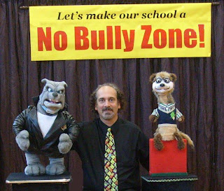

"No Bully Zone"
11/20/2010
By Bob Abdou - mrpuppet
Last year some schools asked me if I had a "Bully show" and I said, "No". Why? As a comedian, I did not want to mix comedy and fun with the topic of Bullying. Well, the summer made me rethink my decision, and I spent over $1000 in NEW puppets, spent over $700 in stage props, spent 2 months finding quality material, spent hours on the phone talking with professionals (like Andy Mrkvicka from Colorado), and spent hours at night writing, writing and rewriting a new script for a "NO Bully" show.
What was the outcome for all this work and money? - My new "No Bully Zone" show is complete, I performed the show 6x in October and another this month. (Not bad for a new show just created during the summer!) I am sure more shows will book once the word gets out. Here is what one school wrote me after a show
"Dear Mr. Puppet, Thank you so very much for coming out to our school! From the moment you walked on stage the students were glued to you! Everyone loved your performance. I have to tell you that I had just returned from a training session on good character and anti-bullying strategies and I was amazed at how perfectly your show addressed all of the key points on anti-bullying. The strategies that you shared with our students are the strategies that we promote and you did it in such an entertaining way that the kids are still talking about you. I highly recommend your show to all elementary schools. The kids were so enthralled with you that they didn't even realize they were learning...but they did, and it shows. Awesome show."
My hard work has paid off. Is this topic easy for others to do? NO, this HOT topic is not to be taken lightly. I have found ways to make this a serious show with a serious message with a twist of humor. (That is my tagline for the show.)
Last year some schools asked me if I had a "Bully show" and I said, "No". Why? As a comedian, I did not want to mix comedy and fun with the topic of Bullying. Well, the summer made me rethink my decision, and I spent over $1000 in NEW puppets, spent over $700 in stage props, spent 2 months finding quality material, spent hours on the phone talking with professionals (like Andy Mrkvicka from Colorado), and spent hours at night writing, writing and rewriting a new script for a "NO Bully" show.
{kind=link}

What was the outcome for all this work and money? - My new "No Bully Zone" show is complete, I performed the show 6x in October and another this month. (Not bad for a new show just created during the summer!) I am sure more shows will book once the word gets out. Here is what one school wrote me after a show
"Dear Mr. Puppet, Thank you so very much for coming out to our school! From the moment you walked on stage the students were glued to you! Everyone loved your performance. I have to tell you that I had just returned from a training session on good character and anti-bullying strategies and I was amazed at how perfectly your show addressed all of the key points on anti-bullying. The strategies that you shared with our students are the strategies that we promote and you did it in such an entertaining way that the kids are still talking about you. I highly recommend your show to all elementary schools. The kids were so enthralled with you that they didn't even realize they were learning...but they did, and it shows. Awesome show."
My hard work has paid off. Is this topic easy for others to do? NO, this HOT topic is not to be taken lightly. I have found ways to make this a serious show with a serious message with a twist of humor. (That is my tagline for the show.)